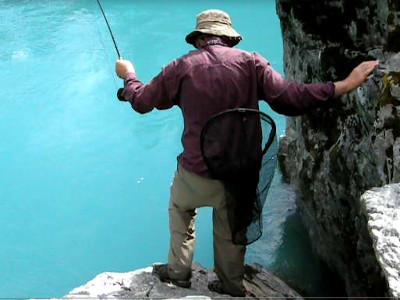
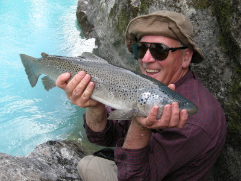

釣行日誌 ＮＺ編 「翡翠、黄金、そして銀塊」
川の流れに...
2010/12/04(SAT)-4
『これがブリントさんの秘策だったか！』

おそらく以前から、この裂け目まで鱒を誘導してくればランディングに持ち込めるという計算があったのだろう。苦労しつつもここまで寄せてきた彼の読みに感心させられた。
狭いくさび型の裂け目の底、もうすぐ水面という位置に陣取ったブリントさんは、両手でロッドを保持して鱒を寄せようと試みる。やや痩せ気味ではあるが巨大な頭のブラウンはまだ向こう側へと進み出す。降りる途中に裂け目の小段に置いておいたランディングネットを手に取り、ブリントさんが取り込み体勢に入った。水面に出た鱒の大きな頭と左右のヒレが圧倒的な迫力だった。差し出したネットにもう少しで頭が入るか？というところでまたしても魚が逸走し、ラインを引き出して沖に逃げてしまう。

いったんネットを置いて、リールファイトのやり直しである。バットから曲げられたロッドが無言の悲鳴を上げている。
それでもとうとう疲れ果て、水面に頭を出した鱒が徐々に引き寄せられてきた。ネットを手にしたブリントさんが、落ち着いて頭からすくう。銀褐色の魚体が黒いネットに収まった。
「 Yeeees! 」
「やったねぇ～！」
「ようしこいつはリリースしてやろう」
「そうだね！」
「ちょっとロッドを持っててくれるか？」
撮影を止め、デジカメをしまい、急な岩場に足を滑らせないようウェーディングシューズのグリップを確かめながら、ブリントさんの位置まで慎重に降りて行く。乾いた岩なのでアクアステルスのゴム底は良くグリップし、不安は無かった。僕にロッドを預けると、彼は体をかがめて鱒の口からフライを外し、最後に魚体を掲げて記念撮影をした。ファイナルキャッチだった。

いやはや、あのブラウンはよく粘ったなぁ...などと10分以上も続いた激しいファイトを二人で振り返りながら一息ついていると、岩場の奥で水浴びをしていた初老の夫婦が声をかけてきた。イギリスから来たというその紳士は、ブリントさんが釣りのガイドをしているのだと説明すると、それじゃぁあなたはギリー（Gillie：スコットランドにおける狩猟・釣りのガイドの呼称）なのだねと言った。
その夫婦とのしばしの歓談を楽しんだ後、僕たちは岩場から散策道に戻り、また吊り橋を渡って車に向かった。急坂を登ってから途中の展望台で休憩がてら風景を楽しんだ。品の良いデザインの木製デッキは居心地が良く、眺望も素晴らしかった。原生林に覆われた狭い峡谷を抜けた大河が広い平野へと流れ進み、大きく蛇行していた。長年の宿願を果たしたブリントさんは、しばし手摺りにもたれながら満足そうに水面を見下ろしていた。
ゆるやかに流れ下る翡翠色の水面に、今回の旅で出会うことが出来た、湖に棲む黄金と見まごうばかりのブラウントラウトや、鮮やかな跳躍を見せた銀塊のようなレインボー、そしてシーラン・ブラウンの姿が浮かんで、そして消えていった。僕の人生を大きく変えることとなった、1997年の初めてのニュージーランド釣行から13年という月日が経っていた。
これからも、この先も、この川は眠ることなく僕たちの心の中を流れ続けることだろう。
釣行日誌ＮＺ編 目次へ
サイトマップ
ホームへ
お問い合わせ